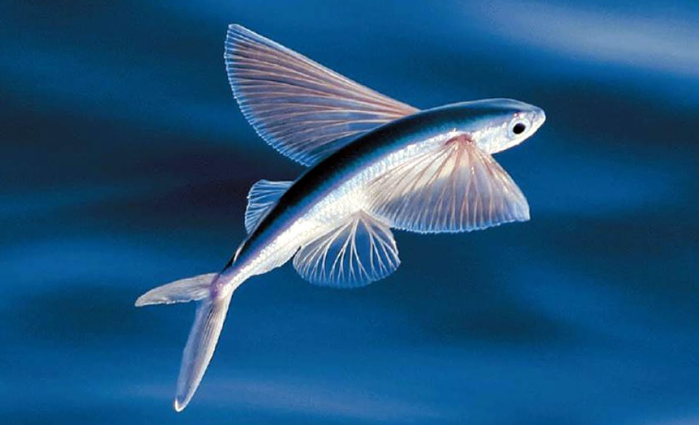
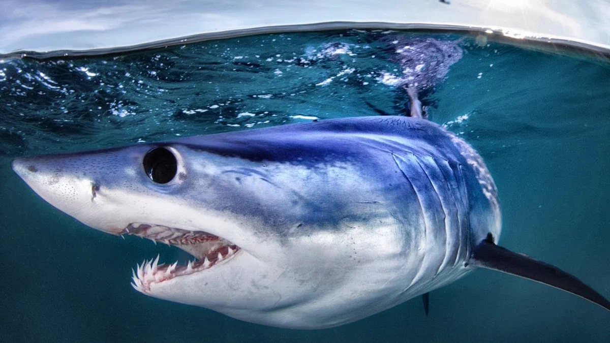
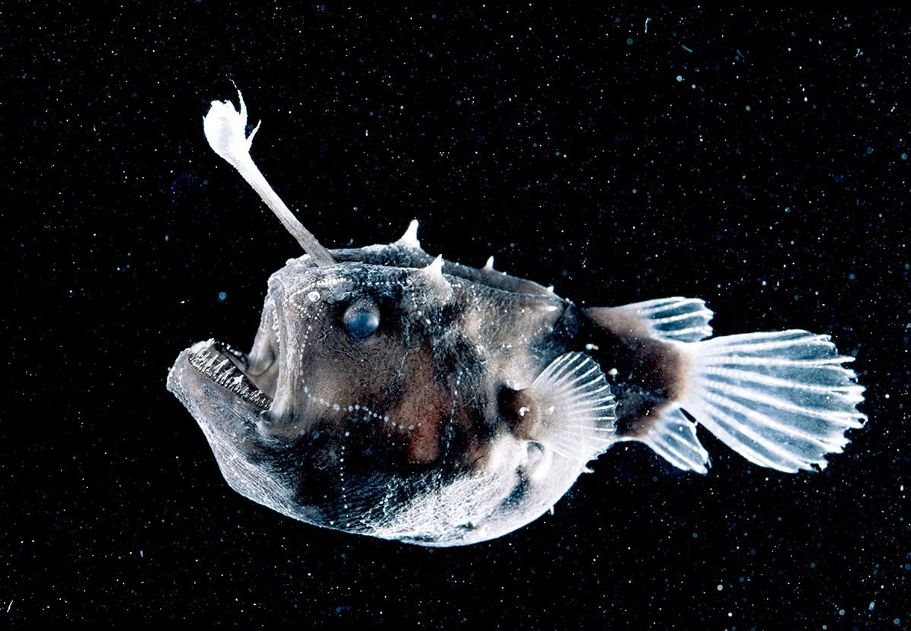
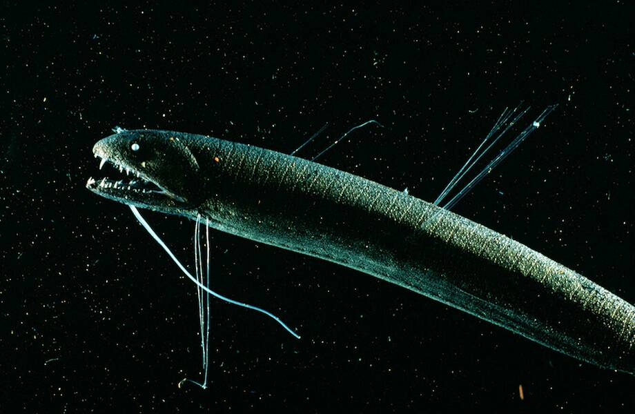

Kto mieszka na dnie oceanu?
Przewiń w dół, aby zanurkować głębiej...

0–50 metrówLatająca ryba
Latająca ryba potrafi wyskakiwać z wody i szybować nad jej powierzchnią na odległość do 200 metrów. Pomaga jej to uciekać przed drapieżnikami, takimi jak tuńczyki i delfiny. Jej płetwy piersiowe działają jak skrzydła — w powietrzu wygląda niemal jak ptak.
50–100 metrów Błazenek
Ta ryba żyje wśród koralowców i ukwiałów, które są trujące dla innych stworzeń. Błazenek pokryty jest śluzem, który czyni go odpornym na jad. Żyje w ścisłej symbiozie z ukwiałami i... potrafi zmieniać płeć, jeśli w grupie brakuje samicy.

100–500 metrówRekin mako
Rekin mako uważany jest za najszybszego rekina na świecie — jego prędkość dochodzi do 74 km/h. Poluje na tuńczyki, mieczniki, a nawet delfiny. Występuje na otwartym oceanie i preferuje umiarkowane oraz ciepłe wody. To jeden z najbardziej agresywnych i inteligentnych drapieżników na tych głębokościach.

500–1000 metrówRyba latarnia
Ryba latarnia zawdzięcza swoją nazwę świecącym organom rozmieszczonym wzdłuż ciała. Używa ich jako „latarek” do przyciągania ofiary i komunikowania się z innymi. Niektóre gatunki potrafią włączać i wyłączać światło jak za naciśnięciem przycisku.

1000–1500 metrówCzarny smok
Czarny smok to przerażający potwór o długim ciele i ogromnych zębach. Samice są duże i groźne. Samce są maleńkie, nie jedzą i żyją tylko po to, by się rozmnażać. Te ryby dosłownie świecą w ciemności — ich szczęki i brzuchy zdobią bioluminescencyjne organy.